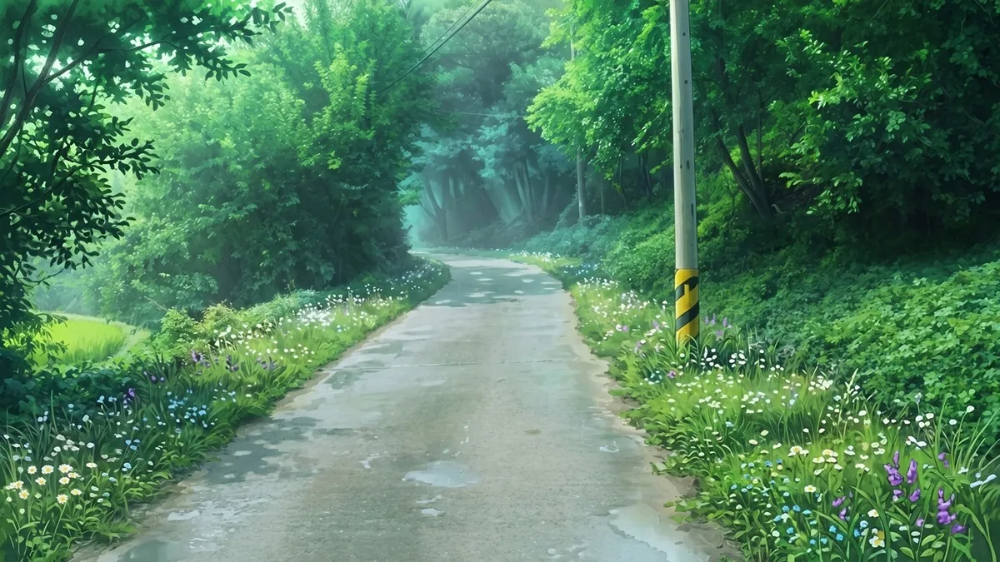

ILLUST
シンプルなギャラリー用テンプレートです。サムネイルをクリックすると画像が拡大表示されます。


COMIC
モーダル内に配置されている前後画像への移動ボタンは、そのセクションに配置されている画像の間のみで移動します。

COMMENT
このCOMMENTセクションをコピペして「ABOUT（サイトの説明）」や「PROFILE（自己紹介）」などに使用すれば、シンプルなトップページとしても使用できます。
その場合（子ページではなく親ページとして使用する場合）は、ページの左上にある「←TOP」のリンクは削除してご利用ください。
白黒のシンプルなデザインにしてありますが、ラインやボタンの色を変更すればいろんなデザインのサイトに合わせられるかと思います。
「ILLUST」「COMIC」セクションは、必要に応じてジャンル名やカップリング名など、任意の名称に変更してください。
※こちらのデモページに掲載している画像はフリー素材をお借りしたものです。テンプレートを使用する際はご自身で用意した画像に差し替えてください。